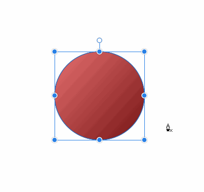
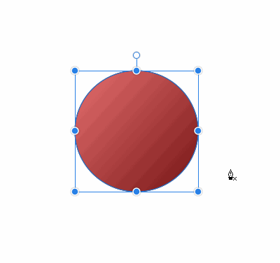
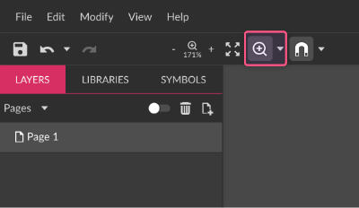

EXTENDED UNDO LIST
Right next to the Undo icon on the toolbar, there’s an arrow icon(1) to open a dropdown. When clicked, it shows a list(2) tracking each step performed on the app, where you can easily go forward and backward.

Knife Tool
Use the Knife Tool to slice a vector object into pieces.
You can find its icon (2) on the Tools Panel between the Pen Tool(1) and Text Tool(3) icons.
Basic Usage
You can slice an object in 3 easy steps:
- Grab the Knife Tool
- Holding the Left Mouse Button key draw a line to dissect an object
- Release the Left Mouse Button key to divide an object into two

Hold the key to constrain the angle of the cutting line to 45 degrees.


Advanced Workflow
Multiple vs Single
To cut a particular object in a group or set, select this object first., then cross it with the Knife Tool.
To cut several objects at once just move the cutting line across all of them (none of them should be selected).
Cutting Curve
Hold to turn the cutting line into the curve. Notice that you are creating the direction handles first to define how curvy your line would be. Release the to draw the cutting curve. Cross an object and release the Left Mouse Button key.
Combine cutting lines
If the cutting line does not cross an object, it creates an incision.
Come up to it with another line to create more complex cutting lines.
Freehand Shaping Tool
Use the Freehand Shaping Tool (former Magic Hand tool) to cut or add a free-hand piece from/to an object. With it, you can keep adding/subtracting geometry from a shape, for example, draw a moon and draw holes on it. Make sure that a shape with a border is selected, otherwise, you can’t see what you are drawing.
You can hold to create straight lines. 

You couldn’t subtract a piece from an opened path or a line.
Drawing a counter-clockwise shape removes it from the original shape, drawing a clockwise non-intersecting shape adds it to the original shape
 

Zoom / Pan
Shortcuts, + click on an object in the layers panel (toggle between zoom to clicked object and fit all), Zoom with the mouse wheel, Zoom in menus, Zoom tool in the toolbar, Fit All,
You can also hover your mouse over an area you want to zoom, hold down the key and use the mouse wheel to change the zoom percentage setting. The zoom will be based on the location of your mouse cursor.
Zoom tool
If the Zoom tool is not visible, click the small arrow beside the Pan tool (hand icon).

Click once on the canvas to change to the next higher preset zoom level.
+ click to change to the next lower preset zoom level.
The zooming area will be based on the location of your mouse click.
Click and drag to zoom in on the bounded area.
Pan
Drag and move the visible portion of the canvas in the viewport. This doesn’t change your design in any way just move what is in view right now.


You can pan around in several different ways:
- with pan tool (often referred to as the Hand tool)
- by middle mouse button click & drag (on some Linux distros middle mouse button pastes clipboard content. Please see FAQ section for help )
- by pressing and holding a key while left mouse click & drag
- to temporary switch to the Pan tool: Hold down key rather than tapping it. Release the key to revert to the tool you previously used.

If the Pan tool is not visible, click the small arrow beside the Zoom tool
Mouse wheel scrolling pans vertically.
+ Mouse wheel pans horizontally.